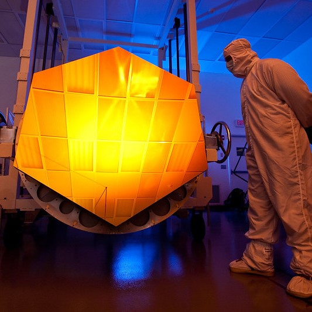
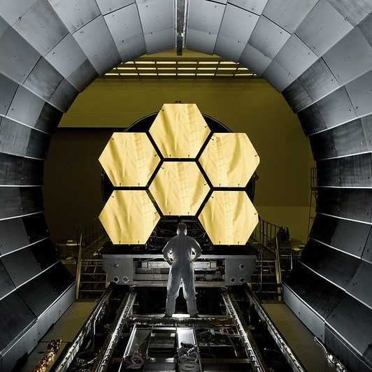
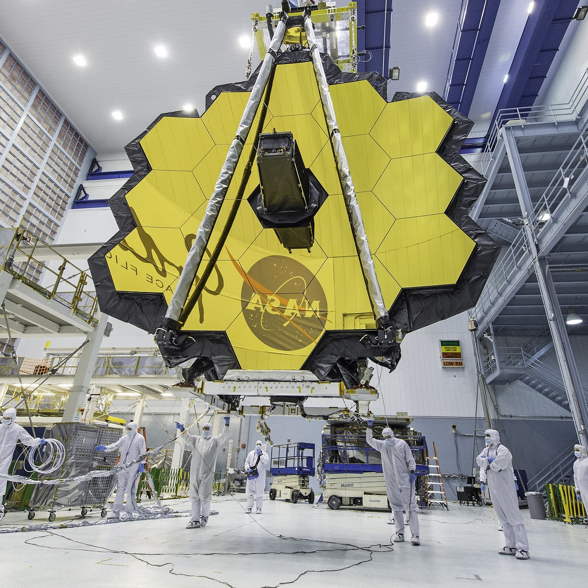

Historia teleskopu Jamesa Webba
1989
Instytut Naukowy o Teleskopach Kosmicznych (STScI) i NASA są współgospodarzami warsztatów dotyczących teleskopu kosmicznego nowej generacji w STScI. Skupiono się na możliwościach naukowych i technicznych obserwatorium, które miało podążać za Kosmicznym Teleskopem Hubble'a po jego wycofaniu z eksploatacji, co szacowano wówczas na rok 2005.
1995—1996
Komisja STScI zaleca znacznie większy teleskop zdolny do obserwacji światła podczerwonego. NASA wybiera Centrum Lotów Kosmicznych im. Goddarda i STScI do zbadania wykonalności teleskopu kosmicznego nowej generacji. Trzy niezależne zespoły rządowe i lotnicze stwierdzają, że utworzenie takiego obserwatorium jest wykonalne.
1997
NASA wybiera zespoły z Goddard Space Flight Center, TRW i Ball Aerospace, aby dopracować wymagania techniczne i finansowe teleskopu.
1999
Lockheed Martin, Ball Aerospace i TRW (również współpracujące z firmami Kodak i ATK) przeprowadzają badania misji fazy A, obejmujące wstępną analizę projektu i kosztów.
2002
Na podstawie dwóch badań fazy A NASA wybiera projekt TRW/Ball Aerospace do kontynuacji w szczegółowych badaniach projektu fazy B, które sprawdzają wydajność i koszt wybranego projektu.
2004
Rozpoczyna się budowa niektórych części teleskopu, które wymagają szeroko zakrojonych i długotrwałych prac — w szczególności instrumentów naukowych Webba i 18 segmentów zwierciadła głównego.
2005
NASA zatwierdza użycie rakiety Ariane 5 Europejskiej Agencji Kosmicznej do wyniesienia Webba w przestrzeń kosmiczną.
2006
Zespoły instrumentów naukowych zajmujących się kamerą bliskiej podczerwieni (NIRCam) i instrumentem średniej podczerwieni (MIRI) przechodzą krytyczne recenzje projektów i rozpoczynają budowę przyrządów pokładowych. Wszystkie podstawowe technologie Webba zostały pomyślnie przetestowane w warunkach lotu.

NASA i Instytut Naukowy Teleskopu Kosmicznego
2007—2008
NASA zleciła przegląd misji Webba grupom wewnętrznym i zewnętrznym. Wewnętrzny wstępny przegląd projektu i zewnętrzny przegląd niezawierający rzeczników stwierdzają, że plany i projekty osiągnęły dojrzałość niezbędną, aby NASA mogła przystąpić do faz C i D, które obejmują szczegółowe projektowanie, zakup, testowanie i montaż komponentów teleskopu i obserwatorium. Budowa zaczyna się na dobre.
2009
Konstrukcja modułu zintegrowanego instrumentu naukowego (ISIM), zbudowana tak, aby pomieścić cztery instrumenty naukowe Webba, przybywa do Centrum Lotów Kosmicznych Goddarda w celu przetestowania.
2010
Webb przeszedł pomyślnie przegląd projektu o znaczeniu krytycznym, co oznacza, że zintegrowane obserwatorium spełni wszystkie wymagania naukowe i inżynieryjne związane ze swoją misją.
2011
Lustra Webba są ukończone. Są pokryte berylem cienką warstwą złota i przeszły testy kriogeniczne, podczas których wystawiono je na działanie niskich temperatur, jakim będą poddawane w kosmosie.
2012
Centrum Lotów Kosmicznych im. Goddarda odebrało z przestrzeni europejskiej i kanadyjskiej dwa z czterech instrumentów naukowych Webba: instrument średniej podczerwieni (MIRI), kamerę bliskiej podczerwieni i spektrograf bezszczelinowy (NIRISS), a także precyzyjny czujnik naprowadzania Webba agencje. Zwierciadło wtórne Webba i pierwsze trzy segmenty zwierciadła głównego również docierają do Centrum Lotów Kosmicznych Goddarda z firmy Ball Aerospace & Technologies Corp.
2013
Dwa boczne „skrzydła” konstrukcji płyty montażowej Webba zostały ukończone przez Northrop Grumman i ATK. Dwa ostatnie instrumenty naukowe Webba, kamera bliskiej podczerwieni (NIRCam) i spektrograf bliskiej podczerwieni (NIRSpec), a także pozostałe segmenty zwierciadła głównego, zostały dostarczone do Centrum Lotów Kosmicznych Goddarda.
2014
Rozpoczyna się produkcja części statków kosmicznych (takich jak zbiorniki paliwa, żyroskopy i panele słoneczne).
Rozpoczynają się testy kriogeniczne modułu zintegrowanego instrumentu naukowego (ISIM), obejmującego wszystkie cztery instrumenty, w celu wykazania wydajności instrumentów, a także elektroniki używanej do komunikacji z instrumentami.

Teleskop kosmiczny nowej generacji
2015-2016
Zakończono testy kriogeniczne modułu zintegrowanego instrumentu naukowego (ISIM). Na płycie montażowej zamontowano 18 segmentów zwierciadła głównego wraz ze zwierciadłem wtórnym i wspornikami. Zwierciadła główne i wtórne są zintegrowane z lusterkami tylnymi i modułem ISIM, tworząc jednostkę znaną jako element teleskopu optycznego.
2017
Element teleskopu optycznego pomyślnie przechodzi testy kriogeniczne w gigantycznej termicznej komorze próżniowej zwanej Komorą A w Johnson Space Center.
2018
Po pomyślnym zakończeniu końcowego testu próżni termicznej element teleskopu optycznego zostaje dostarczony do firmy Northrop Grumman w Redondo Beach w Kalifornii, gromadząc wszystkie elementy lotu Webba pod jednym dachem.
Przeprowadzono pierwsze udane testy łączności z Centrum Operacji Misji w STScI do statku kosmicznego teleskopu na ziemi w Kalifornii.
2019
Po raz pierwszy element statku kosmicznego Webba — osłona przeciwsłoneczna i autobus — pomyślnie przechodzi testy akustyczne, wibracyjne i próżniowe, które symulują surowe warunki środowiska startu, a także ekstremalną próżnię kosmiczną.
Inżynierom udało się połączyć dwie połówki teleskopu Webba — element teleskopu optycznego i statek kosmiczny — w Northrop Grumman.
2020
Webb jest po raz pierwszy całkowicie złożony i przechodzi końcowe testy środowiskowe, aby udowodnić, że jest w stanie wytrzymać wstrząsy i przepychania w środowisku startu.
Osłona przeciwsłoneczna Webba jest również rozkładana po raz ostatni na Ziemi.
2021
Webb jest złożony i schowany przed ostatecznym startem. STScI ogłasza wybór programów obserwacji ogólnych cyklu 1, stanowiących uzupełnienie badań naukowych, które Webb będzie prowadził podczas pierwszego roku swojej misji w kosmosie.
Webb zostaje wysłany do Centrum Kosmicznego Gujany (Le Center Spatial Guyanais, CSG) w Kourou w Gujanie Francuskiej w celu wystrzelenia.
25 grudnia 2021 r.: Wystrzelenie kosmicznego teleskopu Jamesa Webba należącego do NASA